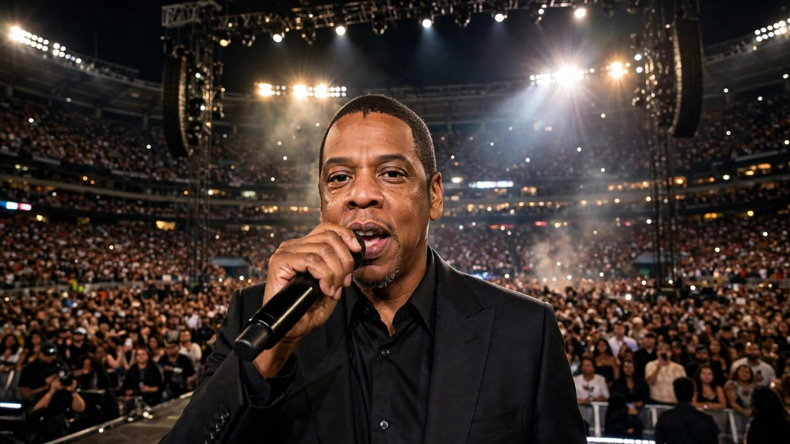

Jay-Z to headline Super Bowl LXI halftime show
Jay-Z will headline the Super Bowl LXI halftime show on February 14, 2027, at SoFi Stadium in Inglewood, California, in his first time performing on the Super Bowl stage.

Sources: Roc Nation, USA Today
Jay-Z will headline the Apple Music Super Bowl LXI Halftime Show on February 14, 2027, at SoFi Stadium in Inglewood, California. The NFL, Apple Music and Roc Nation announced the news on Monday, October 26, 2026, and it will be his first time performing as a Super Bowl halftime headliner.
Read More
The announcement was made during the Monday Night Football game between the Dallas Cowboys and the Philadelphia Eagles. The game itself will air on ESPN, ABC and Disney+, with mobile streaming through NFL+.
Jay-Z's company Roc Nation has worked with the NFL since 2019 as its live music entertainment strategist, and has helped bring Shakira, Jennifer Lopez, The Weeknd, Rihanna, Usher, Kendrick Lamar and Bad Bunny to the Super Bowl stage. Roc Nation will executive-produce the 2027 show, with Hamish Hamilton returning as director.
The announcement comes in a year of anniversaries for Jay-Z, marking 30 years since his 1996 debut album Reasonable Doubt and 25 years since The Blueprint. He celebrated those milestones with his Jay-Z 30 concert series, including three nights at Yankee Stadium in July, two nights in London and one night in Paris, and two shows at SoFi Stadium on October 23 and 24.
Jay-Z has never performed at the Super Bowl before, even though he has helped choose its halftime performers for years. He once turned down a halftime performance in 2017 on principle, while his wife Beyonce has performed at the Super Bowl twice, in 2013 and 2016.
What People Say
Bad Bunny don’t seem so bad now huh?
Jay Z just announced Jay Z. I bet after the performance, Beyonce presents him with a best half time show ever award.
His company has a halftime production contract with the nfl. I guess he is hiring himself
So, he booked himself? Isn’t he the decision maker for the half time entertainment?
Isn't his company/label the one in charge of picking the "entertainment"? (using a loose interpretation of the word entertainment)
 Song Joong-ki Frowns After Fan Mentions Ex-Wife in China
Song Joong-ki Frowns After Fan Mentions Ex-Wife in China Sacha Baron Cohen's Ali G comeback faces boycott campaign days before release
Sacha Baron Cohen's Ali G comeback faces boycott campaign days before release